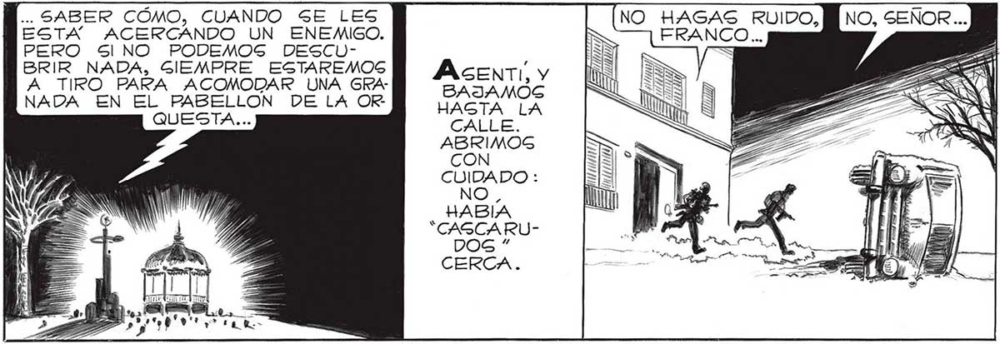

150 ¡ESA MANO NO ES DE 'CASCARUDO”! NO... DEBE PERTENECER A UNO DE LOGS QUE MANDAN A LOG “CASCARUDOS” Y A LOS HOMBRES-ROBOTS... ¡A UNO DE LOS VERDADEROS INVAGOREG, A UNO DE LOS ll A PO) AN / GINATO COSMICO! M NO SERA” FACIL ACERCAR-] NOG SIN QUE NOG DESCUBRAN: POR LA FORMA EN QUE YA NOG DESCUBRIERON UNA VEZ,ES SEGURO,QUE EN ESE APARATO COMO ANTENA, HAY UN DETECTOR QUE LES AVISA,VAYA UNO A... ¿QUE HACEMOS, SEÑOR? TODAVIA ES IMPOSIBLE VERLO MEJOR DESGNO HEMOS PODIDO VERLO BIEN... 1 DE AQUI. DEBEMOS CRUZAR LA CASA LLE: ESOS AUTOG CHOCADOS NOS GERVIRAN DE PANTALLA. ... SABER COMO, CUANDO SE LES NO HAGAS RUIDO, ESTA ACERCANDO UN ENEMIGO. FRANCO... PERO SINO PODEMOS DESCUBRIR NADA, SIEMPRE ESTAREMOS A TIRO PARA ACOMODAR UNA GiANADA EN EL PABELLON DE LA OR QUESTA... CUIDADO : NO, HABIA “CAGCARU- > ly p E AE YN E o E NA CARRERA MAS, Y POR FIN VERÍAMOG CARA A CARA A UNO DE NUESTROG ENEMIGOG. FUE ENTONCES CUANDO GUCEDIO...
